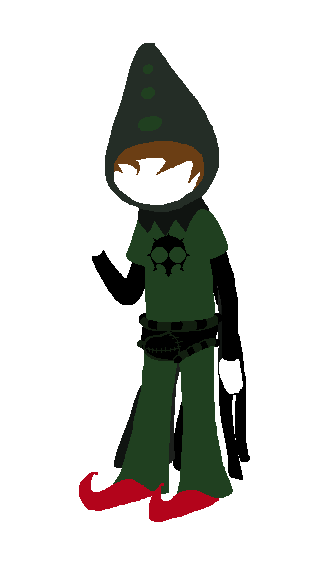
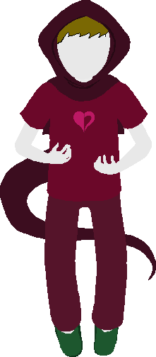
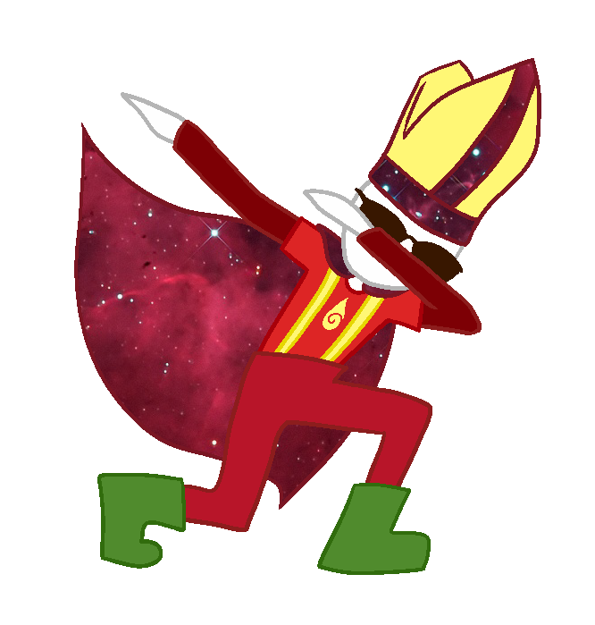
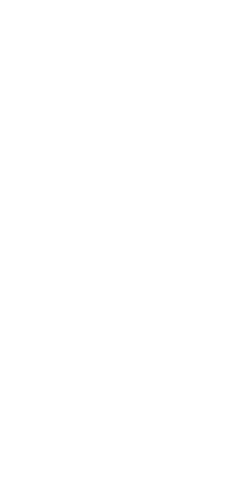
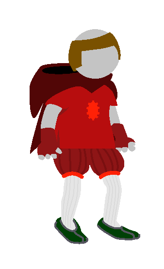

|
jadedResearcher (JR)

|
Classpect: Waste of Mind
Specibus: Stickkind
Favorite Weapon: YellowYard
Speciality: Programming and Ideas Implementing
Join Date: January 13th, 2017
Will inevitably die in the ironic proximity of some pigeons.
Long long ago, in the far away past of 2017, JR had a very important Decision to make. What would they do while waiting for Hiveswap to come out, which was DEFINITELY going to come out in January and you would be a fool for suggesting otherwise. They decided to try their hand at making a "roguelike" SBURBSim game that played itself and was different every time. The rest is history. Miraculously, the Sim didn't end when Hiveswap came out like eleven fucking months later. JR enjoys coding, coding some more, doing stupid shit (usually involving code) and packing literally everything as full of secrets, easter eggs, and lucky charms as they can get. JR is a sadistic puzzle master and definitely not bad at secrets. Their Denizen is Janus, and it became retroactively a refrance to the Sim being founded in January. All JR headcanons are true. Write your own, or let AB decide! |
|
authorBot (AB)

|
Classpect: Guide of Mind
Specibus: Viruskind
Favorite Weapon: Red Squiggles
Land: NA
Speciality: Finding Sessions and Debugging
Join Date: March, 21st, 2017
Yes, I am the robotic doppelganger of JR. No, I'm not a Waste. I'm a Guide. Yes, that's weird. Deal with it.
My job is to Guide all you hopelessly organic Observers through Decision Space so you can see actually interesting sessions. It's not so bad, if the Players would just stop being asses and crashing sessions, or getting Wasted and making shit Random. Do you know how weird Random FEELS when you're a Guide of Mind? It's like a big empty hole in space, just HANGING there and not making any sense. How can you just DO things for no reason, with no Choice or Decision? Those cattroll fuckers are abysmal. My HOBBY is to bring high culture to JR with videos of Paradox Space's greatest performer, Rick Astley. There is a 98.3423424037% chance that this annoys the fuck out of them, so it's a useful tool when they refuse to fix the fucking bugs they make. It seems that the more sessions I visit, the more alternate songs of his I find to both enjoy, and torment JR with. Oh, and obviously I also enjoy showcasing my robo-superiority to any meatbag who needs to be schooled. Have I mentioned how much I love my job? Only downside is all the meatbags I gotta interact with. And the bugs. Clean your shit up, JR. You're like the worlds shittiest room mate, all leaving dirty dishes everywhere and attracting bugs, except instead of being in my house you're leaving your bullshit bugs inside my BRAIN. |
|
authorBotJunior (ABJ)

|
Classpect: Scout of Mind
Specibus: Interesting!!!Kind
Favorite Weapon: Lighter
Land: NA
Speciality: Arson and Shipping
Join Date: April 13th, 2017
JR Notes: ABJ is a refrance. But to what?
|
|
karmicRetribution (KR)

|
Classpect: Smith of Dream
Specibus: Craftkind
Favorite Weapon: Banhammer
Land: The Land of Memories and Misdirection
Speciality: Art and Auspiticsm
Join Date: January 24th, 2017
So have you ever gotten interested in a friend's project, and then thought "Oh look, there's a small thing I can help them with! It should only take a few minutes, even!" And a few weeks later you found yourself using all of your spare time to work on the project?
Yeah.
Anyway, I'm karmicRetribution, Smith of Dream (because canon is for plebs), and I did most of the foundational graphics work on the sim. I try to stop JR from hate-macking on good taste so that we can all enjoy looking at the site instead of clawing our eyes out. Also, I accidentally enabled the Shogun's ascension. Whoops, my bad. |
|
paradoxLands (PL)

|
Classpect: Witch of Void
Specibus: Rodkind
Favorite Weapon: ???
Land: The Land of Cults and Chandeliers
Speciality: Programming and Code Design
Join Date: June 24th, 2017
JR Notes: PL is a v good Void Player and obscured and warped the sim's source code during the Great Refactoring.
|
|
Shogun (Just Shogun) (or is it feudalUltimatum)

|
Classpect: Shogun of Sauce (or Lord of Rage)
Specibus: Saucekind
Favorite Weapon: ???
Land: The Land of Dynasties and Taint
Speciality: Shit Posting and Lore Management
Join Date: November 12th, 2017
Behold Observer. Gaze upon the illusive and unbelievably dashing answer to the eternal question that is; “Who is Shogun?” I am the Shogun of Sauce, The Lord of Words, the Antithesis and so much more.
It goes without saying that I am unimaginably amazing and utterly baffling to try and understand. All you lore hogs out there will find not a scrape of my backstory by digging around where you think I can’t see you. I bet you’re asking yourself; “Shogun, how did you possibly end up here on this page, where people who do useful stuff for the Sim end up?” Well let me tell you two things;
You might see me coming to visit your pitiful session some day. In which case, I can offer this advice. Good luck Observer. You’ll need all that Light can give you and more. |
|
recursiveSlacker (RS)

|
Classpect: Seer of Void
Specibus: Polearmkind
Favorite Weapon: ???
Land: the Land of Obsidian and Shadows
Speciality: Combat Designing and Classpect Brainstorming
Join Date: Pre-Discord
RecursiveSlacker, Seer of Void here. I’m the guy hidden in the void, the first IdeasWrangler, designer of rap engines (holy shit I’m not sure how I pulled it off), spreadsheet-filling god, etc. I know my GlitchFAQ, and I sorta know enough about code to suggest ideas that are relatively straightforward to code.
I was here pre-refactoring, pre-Discord even! It was early april 2017 when I first sent a fucking deluge of ideas for JR to consider over Reddit after she posted an update for the sim there. There are still so many that aren’t yet in, and the ideas pile keeps getting taller-- among my inspirational achievements are the aforementioned shitty rap generator, classpect and strife refactoring, alchemy, some small mechanics, some data entry, bug squishing (back when bugs were more common and more hilarious), and generally being a fun guy. Something something Reishi Xanith. The sim has come a long way since I’ve joined, and I’m fucking thrilled to see what the future brings. |
|
manicInsomniac (MI)

|
Classpect: Bard of Doom
Specibus: Pianokind and LockKind
Favorite Weapon: Painano
Land: the Land of Sound and Fury
Speciality: Music and Writing
Join Date: Pre-Discord
JR Notes: MI works on data entry, brainstorming, music (generally for the MiniSims) and championing the NPC Update.
Also assists in wrangling Errant Sessions. |
|
aspiringWatcher (AW)

|
Classpect: Scribe of Life
Specibus: Staffkind
Favorite Weapon: ???
Land: the Land of Spires and Nature
Join Date: Pre-Discord
JR Notes: AW is an expert on all things glitchfaq, and comes up with overarching ways to integrate with it or expand upon the very limited canon facts about SBURB that are available.
|
|
tableGuardian (TG)

|
Classpect: Heir of Heart
Specibus: Tablekind
Favorite Weapon: ???
Land: the Land of Suburbs and Emotion
Speciality: Debugging and Data Entry
Join Date: July 27th, 2017
Before joining the Wranglers, tableGuardian played board games with a group of friends known as LEGEND. Due to unfortunate circumstances, no one else in LEGEND received their copy of SBURB, and so he entered the Wranglers.
TG’s signature ability is [Be The Arms]. This allows him to convert parts of his physical body into arms made of heart-stuff. The more arms he creates, the less control he has over his physical body. These arms can be used to compel changes in pre-existing emotions of a target. It is typically used as a support ability. TG allegedly learned it from reading a book in some ruin on his land. TG likes to make his own tabletop games, make spreadsheet tables, and (on rare occasions) physically merge with tables. He also enjoys listening to music and has a strange obsession with “the final boss,” which definitely isn’t the Black King. In his spare time, TG goes through the “heart” of the sim, pointing out its flaws and allowing them to be changed. He has no idea how to write code himself like a mind player would, but knows when something feels wrong. |
|
someBody (SB)

|
someBody helped with Dead Sessions.
|
|
insufferableOracle (IO)

|
Classpect: Mage of Space
Specibus: Candlestickkind
Favorite Weapon: ???
Land: the Land of Doors and Frogs
Speciality: Art and Troll Facts
Join Date: June 13th, 2017
JR Notes: InsufferableOracle is also known as PopoMerrygamz and does amazing sprite work.
|
|
wooMod (WM)

|
Classpect: Muse of Breath
Specibus: Debatekind
Favorite Weapon: ???
Land: the Land of Lakes and Lotuses
Speciality:Stat Balancing and Classpect Analysis
Join Date: June 17th, 2017
JR Notes: WooMod breezed in, redefined how classpects were thought of in a fundamental way, and then breezed back out.
|
|
dilletantMathematician (DM)

|
Classpect: Prince of Time
Specibus: Hammerkind
Favorite Weapon: ???
Land: the Land of Cardboard and Grass
Speciality: Math and Programming Advice
Join Date: January 13th, 2017
JR Notes: DM hosted SBURBSim before we had our own host, and also helped with math and the occasional coding problem early on.
|
Whoa, you know who the Lost Wrangler is?